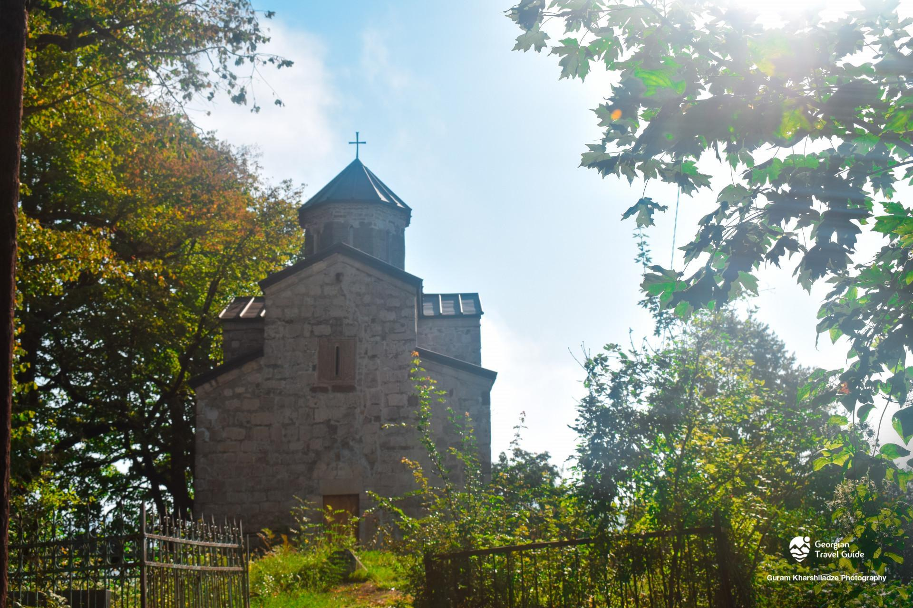

ცხეთის წმ. გიორგის ეკლესია
ცხეთის წმ. გიორგის ეკლესია ლეჩხუმში, სოფელ წილამიერთან მდებარეობს. იგი 1728 წელსაა აგებული. ეკლესია ჩახაზული ჯვრის ტიპის ჯვარ-გუმბათოვან ნაგებობას წარმოადგენს. ტაძარს რვაწახნაგა გუმბათი აქვს, რომელიც ბემის კუთხეებსა და ორ მრგვალ ბოძს ეყრდნობა. აფსიდალური საკურთხევლის ორივე მხარეს სწორკუთხა პასტოფორიუმებია. ჯვრის მკლავები გადახურულია ნახევარწრიული კამარებით. ეკლესიის ყოველ მკლავში, სამკვეთლოში, სადიაკვნესა და გუმბათის თითოეულ წახნაგში სარკმელია გაჭრილი. აღმოსავლეთის სარკმელი მორთულია მედეალიონებითა და მცენარეული მოტივებით, დასავლეთის სარკმელი კი - ადამიანთა, ცხოველთა და ფრინველთა რელიეფებით. აღმოსავლეთ სარკმლის საპირეში ჩართულია მარჯვენა ხელის რელიეფური გამოსახულება და მხედრული წარწერა. ნაგებობას ორი სწორკუთხა შესასვლელი აქვს - დასავლეთითა და სამხრეთით. დასავლეთით შესასვლელის ტიმპანში გოლგოთის ჯვრის გამოსახულებაა. დასავლეთ ფასადის ფრონტონის არეში ვერძის თავის ქანდაკებაა. აღმოსავლეთ ფასადსაც იგივე სისტემის დეკორი აქვს, შესასვლელის გამოკლებით. სამხრეთ ფასადის შესასვლელს ჯვრის მოხაზულობა აქვს მიცემული, შესასვლელის ტიმპანში სამმაგი ჯვრის რელიეფია. ფასადებს ქვის სადა ლავგარდანი შემოუყვება, გუმბათს კი - ქართული აგურის ხუთსაფეხუროვანი „ხერხულა“ ლავგარდანი.

მერია
რუსთაველის ქუჩა N 58
(+995) 599 18 24 25
tsagerimeria@gmail.com
საკრებულო
რუსთაველის ქუჩა N 69
(+995) 551 17 97 41
tsagerisakrebulo@gmail.com